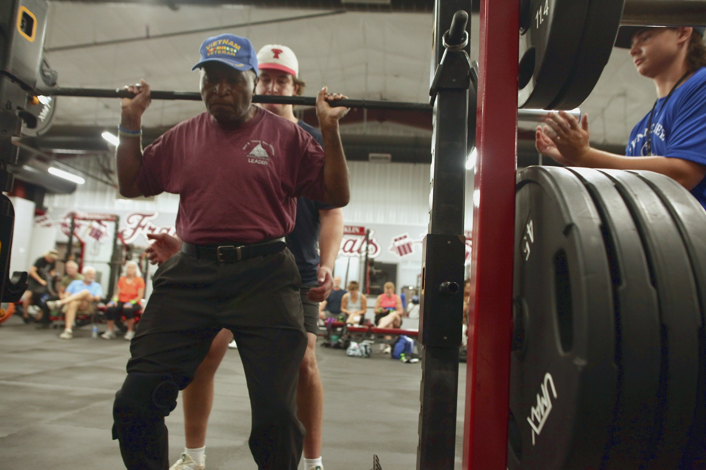

Our Mission
Healthy, Active, VitalA mission four decades in the making
The Tennessee Senior Olympics began in 1981 with a mission that has continued for over 30 years — to promote healthy lifestyles for seniors through fitness, sports, and an active involvement in life.
Our programs contribute to the vision of healthy, active, and vital senior adults across every corner of the state.
